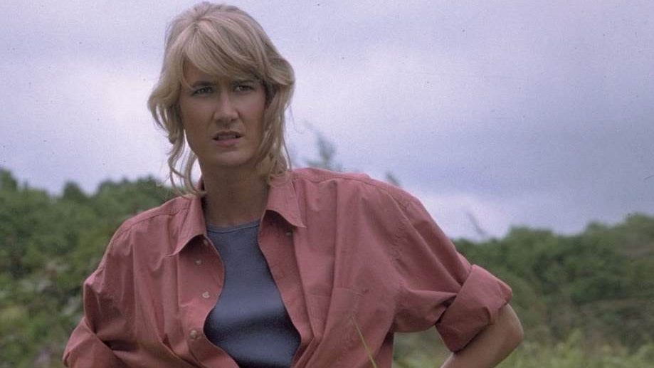

Profile
Name: Dr. Ellie Sattler
Age: 55 (as of *Jurassic World: Dominion*)
Occupation: Paleobotanist
Specialty: Prehistoric Plants
Character Background
Dr. Ellie Sattler is a renowned paleobotanist and one of the main protagonists in the Jurassic Park franchise. She is known for her expertise in plants, particularly prehistoric plant species.
Ellie is portrayed by Laura Dern in the film adaptations. She plays a crucial role in the events of Jurassic Park and its sequels, showing both intelligence and bravery in the face of danger.
Key Appearances
- Jurassic Park (1993)
- Jurassic Park III (2001)
- Jurassic World: Dominion (2022)
Famous Quote
"You can't think through this. You have to feel it." – Dr. Ellie Sattler, Jurassic Park (1993)